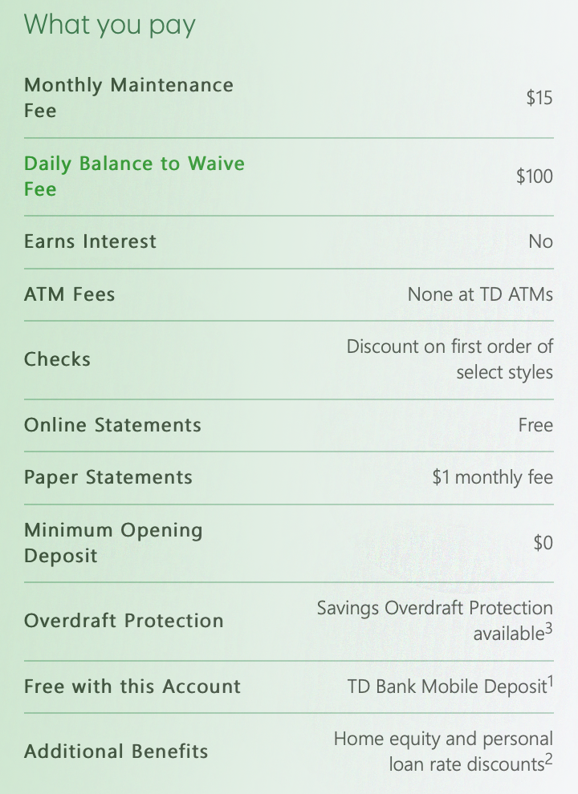

Home
Products
Savings
Credit Cards
CDs
Learning
Find Us
Help
TD Convenience Checking
Get the checking account with a low minimum balance to waive the monthly fee, plus convenient features like instant
issue debit card and TD Bank Mobile Deposit.
